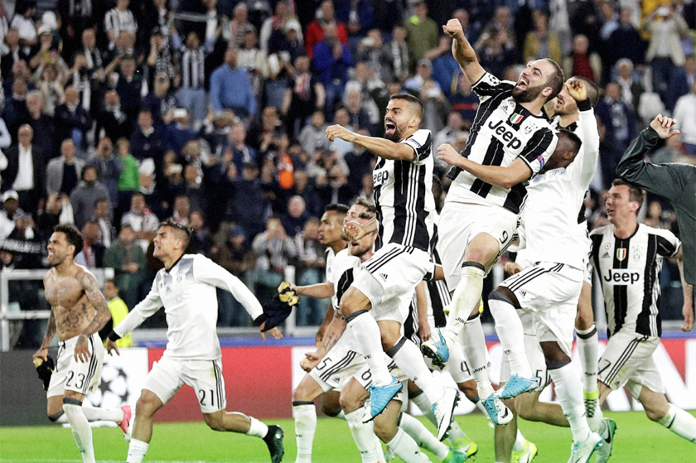
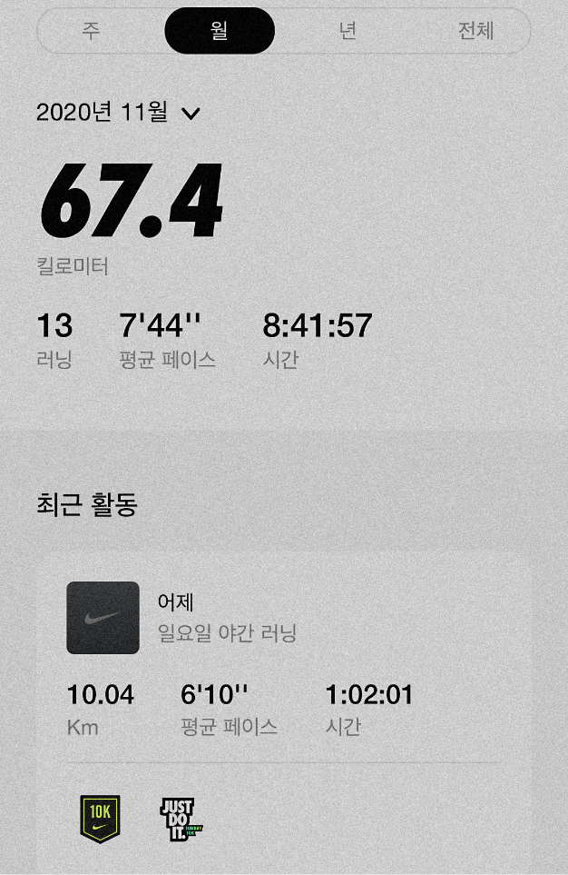

공감하는 개발자
프로그래밍 분야 이외에도 기획, 디자인 분야에서도 제가 가지고 있는 지식을 최대한 반영하여 기획자와 디자이너의 의견에 귀를 기울이는
공감하는 개발자가 될 것입니다.
"I design and develop experiences that make people's lives simple." 사람들의 삶을 단순하게 만드는 경험을 디자인하고 개발합니다
저의 워크 모티브 입니다. 디자인을 하고 개발을 할 때, 즉 웹 디자인과 퍼블리싱의 일련의 과정에서 무거움을 덜어내면서도 사람들이 가장 주목할만한 것이 무엇인지를 정확히 파악하여 그에 집중한 퍼포먼스를 보여줄 수 있도록 항상 생각합니다.
저는 좋아하는 한가지에
잘 빠지는 사람입니다.
지난 20년간 변치 않고 미쳐있었던 것은 축구입니다. 가장 즐거웠던 순간은 유벤투스가 챔피언스리그 결승전에 진출했을 때이고 가장 불행했던 순간은 유벤투스가 챔피언스리그 결승전에서 처참하게 졌을 때 입니다.

학창시절 육상선수 생활을 했던 습관이 몸에 배어서인지 아니면 그렇게 뛰어다닐 운명이었는지 괜히 걷는것보다는 뛰는 것을 더 좋아하는 사람이 되었습니다. 스스로의 가치를 높이는 것 중 하나는 좋은 자기관리라고 생각하기 때문에 꾸준히 운동을 하려고 합니다.
사실 뛰는 것보다 더 잘하는 것은
한 자리에 오래 앉아있는 것 입니다.
장시간 작업에 특화되어있음

저는 여행과 모험을 즐깁니다.
자연을 보는 것이 즐겁고 그 안에서 많은 영감을 얻기도 합니다. 접하지 못 해본 것이나 새로운 장소를 반기고 두려워하기보다는 도전하는 편입니다.
제게 오랜 롤모델인 보아라는 가수가 있습니다. 20년동안 늘 같은 길을 걸어가며 한 해도 쉰 적이 없는 사람입니다. 보아는 프로란 자신의 위치에 안주하지 않고 반성하고 고쳐나가는 사람이라고 하였습니다.
내가 걷는 길 위에서 끊임없이
발전하는 사람이 되고 싶습니다.
#
#